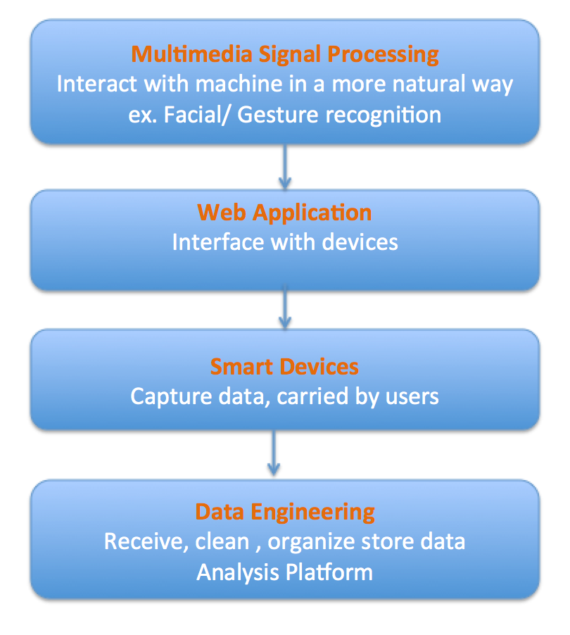

when i am writing...
Education as international chain?
NYU Shanghai, Georgia Tech Shenzhen, Duke Kunshan, CMU Nanjing & Guangzhou...
American universities are entering chinese education market!
What will they bring? What will they change? What will be their impacts?
I am going to write an article about it.
Quirky Thursday Night
Thanks to Nathaniel @ Quirky!
I am going to attend the Quirky Thursday Night this Thursday.
Can't wait to evaluate ideas!
I will post photo and article after meeting.
Visit MongoDB HQ
Thanks to Gary @ MongoDB!
I just had a trip to MongoDB HQ.
Gary showed me several applications of MongoDB and how will MongoDB change web infracture.
I will post photo and article soon.
who am i?
I am Hao. I just graduated from University of Illinois at Urbana-Champaign with a bachelor degree in Computer Engineering. I will continue my graduate study in Cornell University this fall.
I am interested in "Internet of Things (IoT) ". In the era of IoT, devices will be connected to each other and produce large amount of data. Users can easily interact with devices through web interface in a more visual way. These are four specific fields I am interested in:
Smart devices: with a background in computer system, I have done many system level programming in C and assembly language. With knowledge in microcontrollers and digital circuit (VHDL) , I can help engineering prototype. Moreover, grew up in Shenzhen, China, world's hub for hardware startups, I can help to convert prototype to real product. With my engineering background and international experience, I hope I can help with two biggest chanlanges in hardware startups:
1.Attain on-time delivery 2.ensure manufacturers really understand what you need.
Data infrastructure: the idea of data analysis is not new, many statisticians, mathematicians and business analysts have already done that. But why data analysis becomes so popular now? I believe it's because leapfrogging in data infrastructure. Distributed systems nowadays can power
real-time and high volume of data With a powerful platform, data scientists and business analysts can easily perform data analysis anytime they want and get immediate feedbacks. With better visualization tools, everyone can make start data analysis without compliacted trainning.
Web applications: web is the gate of information flow. I work with both backend and frontend. In Startup Institute, I am working projects in Rails, Sinatra and Flask with SQL. However, I believe web application in future will become more
interactive and dynamic. So, I start learning NodeJS and MongoDB, which is the stack can help web application scale and go real-time in long term. (This website can be considered as one of my front-end demo.)
Multimedia Applications: Multimedia signal processing is my concentration in my undergraduate study. I studied multimedia signal processing in many different aspects, including but not limited to analogy signal processing, digital ignal processing, embedded ignal processing, machine learning in signal processing, and statistical signal processing. I did projects in both scalar signal processing (audio) and vector signal processing (images and video).
My email is haozheng4@acm.org . Please let me know if there is opportunity in
any of these four fields.
